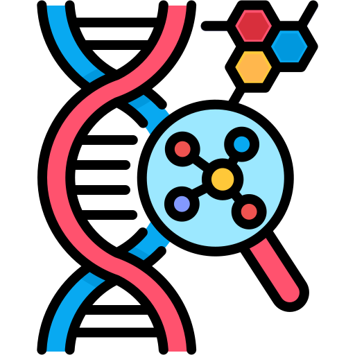
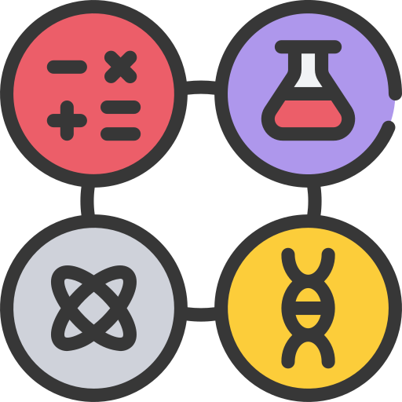
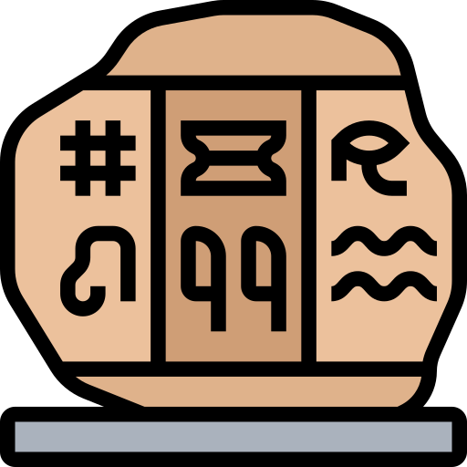
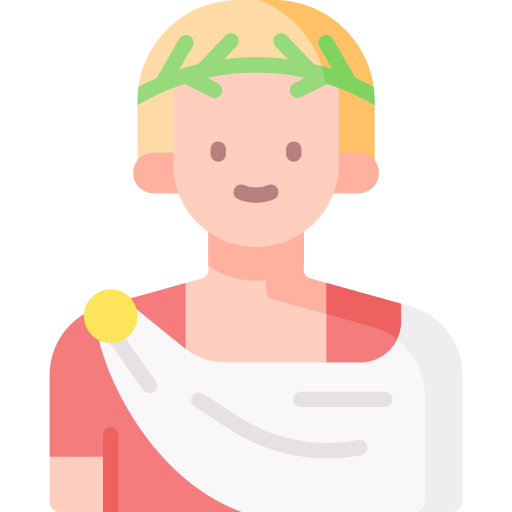

Catégories
Projets
Les projets DIY

Biologie
Fiches de cours en Biologie

Science de l'ingénieur
Fiches de cours en Science de l'ingénieur

Mathématique
Fiches de cours en Mathématique

Physique
Fiches de cours en Physique

Histoire
Fiches de cours en Histoire
Cryptographie
Fiches de cours en Cryptographie

Personnalité
Fiches Biographiques